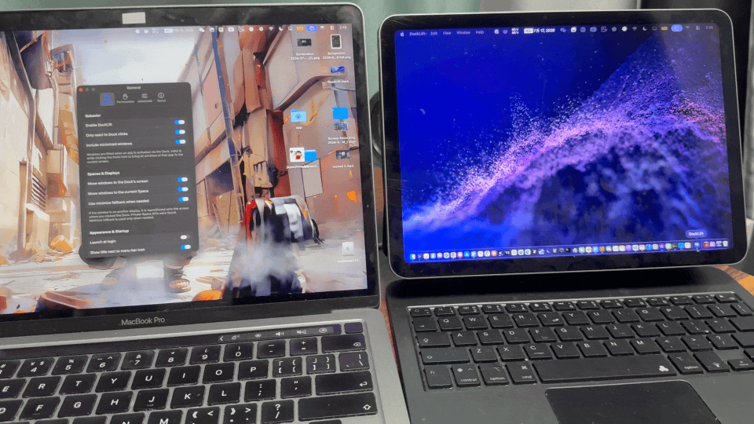
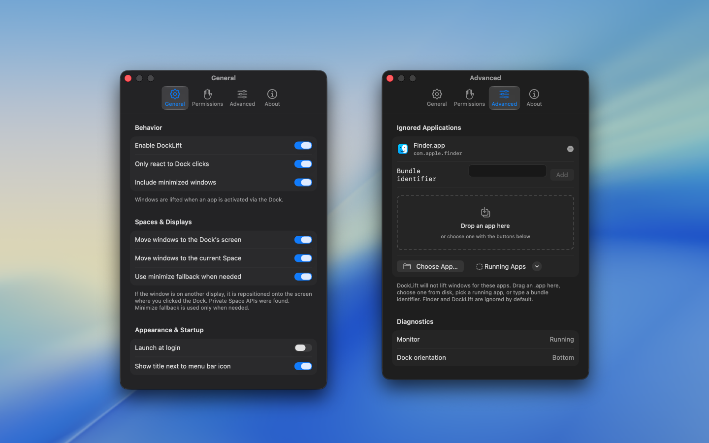

# Installation (automatically installs to /Applications)
$ brew install --cask jaywcjlove/tap/dock-lift


Using a Mac with more than one display, you may click an app in the Dock only to find its window still on the other screen—open, but not in front of you.
DockLift lives in the menu bar and, when you click a Dock icon, moves that app’s recent window to the screen you’re on and brings it to the front.